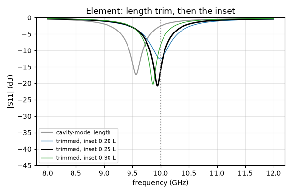
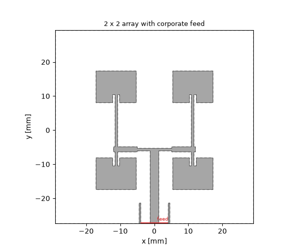
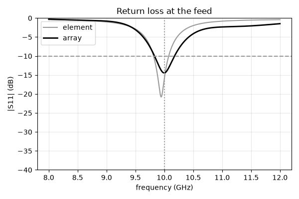
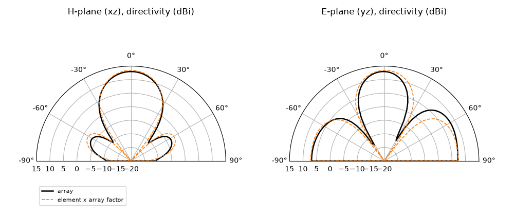
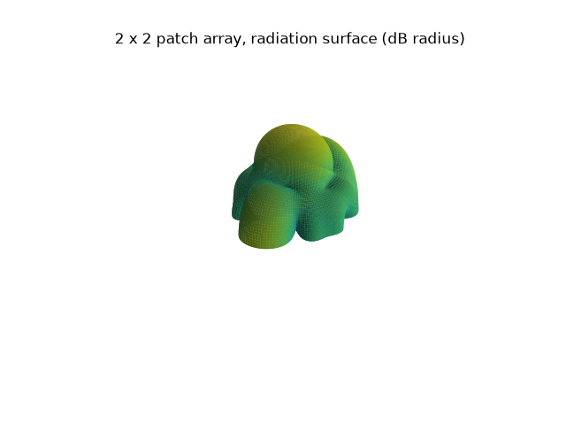

Note
Go to the end to download the full example code.
Patch array: a 2 × 2 corporate-fed microstrip array from element to pattern#
A single rectangular patch is the textbook printed antenna — a half-wave resonator on a grounded substrate, 7 dBi of directivity, a few percent of bandwidth. Four of them on a lattice of three quarters of a wavelength, fed in phase, give 13 dBi and a beam that the array factor sharpens in both planes. This guide designs the element, then the corporate feed that splits one 50 Ω input into four equal, in-phase branches, and reads match, directivity and the two principal-plane cuts off the array run — with the element pattern times the array factor as the independent check.
New compared with the antenna tutorials and the coupler pages:
the element-to-array flow: the patch is dimensioned by the cavity formulas, its length trimmed once from the resonance the run reports, its inset feed chosen from a short sweep on the trimmed patch — and the array gets one more trim, because the feed network loads the patches it feeds;
a corporate feed on the grid’s own line impedances: T-junctions into 100 Ω arms, quarter-wave transformers back to 50 Ω, every impedance taken from the port solver on the production mesh, so the network is consistent with the run that uses it;
in-phase feeding of a second row without a meander: the two rows face each other across the distribution line, which would feed them in anti-phase; sliding that line a quarter of a guided wavelength off the array centre makes one arm half a wavelength longer than the other and restores the phase — every arm stays straight;
a microstrip port in an absorbing wall: the array’s 50 Ω trunk enters the model through a short shielded launch on the CPML face, the window port sits in the launch’s cross-section, and the far-field monitor accounts for the guide (see the ports and far-field chapters of the methods section); the element keeps the lumped port of the antenna tutorials.
The reference for the pattern is the element cut multiplied by the array factor of four in-phase sources — the standard array-theory estimate. It carries no mutual coupling and no feed-line radiation, and the comparison shows where those matter.
import matplotlib.pyplot as plt
import numpy as np
import magnelio as mio
from magnelio import geo, monitors, plots, ports
from magnelio.constants import C0
Given quantities#
A PTFE-glass laminate of the kind every antenna text uses, 35 µm copper, X band. The lattice is 0.75 λ along the H-plane and 0.85 λ along the E-plane: the feed network runs between the two rows, and the E-plane spacing is what makes room for it (the layout section below has the geometry). The element lengths and the network are derived from these values; edit them for your own board.
eps_r = 2.2 # substrate permittivity
h_sub = 0.787e-3 # substrate height
t_cu = 35e-6 # copper thickness
f0 = 10.0e9 # design frequency
f_min, f_max = 8.0e9, 12.0e9 # simulated band
lam0 = C0 / f0
p_x = 0.75 * lam0 # column pitch (H-plane)
p_y = 0.85 * lam0 # row pitch (E-plane)
clearance = 12e-3 # copper to the absorbing boundary
h_box = 0.7 * lam0 # air above the ground plane: the far-field box top clears the near zone
z_in = 50.0 # input impedance of the feed
substrate = mio.Material.from_isotropic(name="substrate", epsilon=eps_r)
The synthesis#
Closed forms carry the first draft: Hammerstad’s microstrip synthesis for the three line widths of the network, the cavity-model patch — width for efficient radiation, length a fringing correction short of the half wavelength in the substrate. The inset depth \(y_0\) that brings the edge resistance down to the 100 Ω of the feed arm is left to a sweep below: the cosine-squared law of the cavity model is off by a factor of two for a notched feed on this substrate.
def microstrip_width(z0):
"""Trace width for characteristic impedance ``z0`` on this substrate (Hammerstad)."""
a = z0 / 60 * np.sqrt((eps_r + 1) / 2) + (eps_r - 1) / (eps_r + 1) * (0.23 + 0.11 / eps_r)
b = 377 * np.pi / (2 * z0 * np.sqrt(eps_r))
w_h = 8 * np.exp(a) / (np.exp(2 * a) - 2)
if w_h > 2:
w_h = (2 / np.pi) * (
b
- 1
- np.log(2 * b - 1)
+ (eps_r - 1) / (2 * eps_r) * (np.log(b - 1) + 0.39 - 0.61 / eps_r)
)
return float(w_h * h_sub)
def patch_dimensions():
"""(W, L) of the rectangular patch from the cavity model."""
W = C0 / (2 * f0) * np.sqrt(2 / (eps_r + 1))
eps_eff = (eps_r + 1) / 2 + (eps_r - 1) / 2 / np.sqrt(1 + 12 * h_sub / W)
dL = 0.412 * h_sub * (eps_eff + 0.3) * (W / h_sub + 0.264)
dL /= (eps_eff - 0.258) * (W / h_sub + 0.8)
return float(W), float(C0 / (2 * f0 * np.sqrt(eps_eff)) - 2 * dL)
w50 = microstrip_width(z_in)
w70 = microstrip_width(np.sqrt(2) * z_in)
w100 = microstrip_width(2 * z_in)
W_patch, L_formula = patch_dimensions()
print(f"lines: w50 = {w50 * 1e3:.2f} mm, w70.7 = {w70 * 1e3:.2f} mm, w100 = {w100 * 1e3:.2f} mm")
print(f"patch: W = {W_patch * 1e3:.2f} mm, L = {L_formula * 1e3:.2f} mm (cavity model)")
lines: w50 = 2.42 mm, w70.7 = 1.39 mm, w100 = 0.71 mm
patch: W = 11.85 mm, L = 9.65 mm (cavity model)
The lines on this grid#
The network is a set of impedance ratios — an arm has to be twice the trunk, a transformer their geometric mean — and the impedances that matter are the ones the grid gives the lines, not the ones the closed form promised. Three short slices through the port solver read them; the mesh control is the one the array run will use. The grid’s values come out a tenth low across the board (the current crowds at the trace edges, and 0.25 mm cells cannot follow it), the ratios hold to a few percent, and the port that feeds the array is referenced to its own line mode — so the design is consistent as it stands. Recovering the absolute values takes the edge refinement of the Lange page, at several times the run time.
mesh_control = mio.MeshControl(min_nodes_per_wavelength=20, min_cell_size=0.25e-3)
def line_mode(width, length=2e-3, w_box=16e-3):
"""(Z_line, eps_eff) of a microstrip of ``width`` on this grid."""
model = mio.GeometryModel()
model.add(geo.Brick(origin=(0, -w_box / 2, 0), size=(length, w_box, h_sub), material=substrate))
air = geo.Brick(
origin=(0, -w_box / 2, h_sub), size=(length, w_box, h_box - h_sub), material="air"
)
trace = geo.Brick(origin=(0, -width / 2, h_sub), size=(length, width, t_cu), material="pec")
model.add(geo.Difference(air, trace))
model.add(trace)
model.add_port(ports.PortWaveguide(name="line", plane="xmin", n_modes=1))
mesh = mio.Mesh.from_geometry(model, mesh_control, f_max=f_max)
mode = mio.AnalysisScatteringTD(mesh=mesh, verbose=False).solve_ports()["line"].modes[0]
return float(mode.z_line), float(mode.epsilon_eff)
z_trunk, eps_trunk = line_mode(w50)
z_transformer, eps_transformer = line_mode(w70)
z_arm, eps_arm = line_mode(w100)
lam4 = C0 / f0 / np.sqrt(eps_transformer) / 4 # transformer length
lam_g_arm = C0 / f0 / np.sqrt(eps_arm) # guided wavelength of the arms
print(f"grid: trunk {z_trunk:.1f} ohm, transformer {z_transformer:.1f} ohm, arm {z_arm:.1f} ohm")
ratio_arm, ratio_t = z_arm / z_trunk, z_transformer / z_trunk
print(f" arm/trunk = {ratio_arm:.2f} (2), transformer/trunk = {ratio_t:.2f} (1.414)")
print(
f" quarter wave (transformer) {lam4 * 1e3:.2f} mm, arm lambda_g {lam_g_arm * 1e3:.2f} mm"
)
mesh | feature planes
mesh | grid lines
mesh | materials
mesh | conformal cells
mesh | PEC masks
mesh | 3 x 22 x 22 cells
mesh | feature planes
mesh | grid lines
mesh | materials
mesh | conformal cells
mesh | PEC masks
mesh | 3 x 26 x 22 cells
mesh | feature planes
mesh | grid lines
mesh | materials
mesh | conformal cells
mesh | PEC masks
mesh | 3 x 26 x 22 cells
grid: trunk 44.7 ohm, transformer 63.2 ohm, arm 86.7 ohm
arm/trunk = 1.94 (2), transformer/trunk = 1.41 (1.414)
quarter wave (transformer) 5.51 mm, arm lambda_g 22.34 mm
Building blocks#
Everything is copper on the substrate plane: rectangles for the
lines, a patch with a notch for the inset feed, and the launch —
a short shielded section where the feed line meets the absorbing
wall. A window port on a CPML face has to be enclosed by conductor,
so the launch puts two walls and a roof around the trace for the
first few millimetres, the way a connector body would. board
assembles substrate, air, copper and shield into an open model with
the ground plane as the only electric wall, and feeds it one of two
ways: a lumped port — a pin from the trace down to the ground — for
the element, whose 100 Ω line is narrow enough for a pin to
terminate it cleanly (the lumped-port tuning pages), and the window
port in the launch for the array, whose 2.4 mm trunk is not. Both
are referenced to the line’s own impedance on this grid.
tunnel_w, tunnel_h, tunnel_l = 8e-3, 4e-3, 6e-3 # launch shield: width, height above copper, length
wall = 0.5e-3
def rect(x0, y0, x1, y1):
x0, x1 = sorted((x0, x1))
y0, y1 = sorted((y0, y1))
return geo.Brick(origin=(x0, y0, h_sub), size=(x1 - x0, y1 - y0, t_cu), material="pec")
def trace(x0, y0, x1, y1, width):
"""A trace of ``width`` along the centre line (x0, y0) -> (x1, y1), square ends."""
x0, x1 = sorted((x0, x1))
y0, y1 = sorted((y0, y1))
return rect(x0 - width / 2, y0 - width / 2, x1 + width / 2, y1 + width / 2)
def patch(cx, y_edge, L, y_inset, side=+1):
"""A patch of length L whose fed edge is at ``y_edge``; ``side`` is the direction it extends in.
The notch of the inset feed is two line widths wide and ``y_inset`` deep.
"""
xn = 1.5 * w100 # half width of the notch
y_far = y_edge + side * L
y_notch = y_edge + side * y_inset
return [
rect(cx - W_patch / 2, y_edge, cx - xn, y_far),
rect(cx + xn, y_edge, cx + W_patch / 2, y_far),
rect(cx - xn, y_notch, cx + xn, y_far),
]
def launch(y_wall, length=tunnel_l):
"""Shield walls and roof around the trace entering at the ``ymin`` wall."""
z_roof = h_sub + tunnel_h
return [
geo.Brick(
origin=(-tunnel_w / 2 - wall, y_wall, 0.0),
size=(wall, length, z_roof + wall),
material="pec",
),
geo.Brick(
origin=(tunnel_w / 2, y_wall, 0.0), size=(wall, length, z_roof + wall), material="pec"
),
geo.Brick(
origin=(-tunnel_w / 2 - wall, y_wall, z_roof),
size=(tunnel_w + 2 * wall, length, wall),
material="pec",
),
]
def board(copper_pieces, feed, shield_pieces=(), y_wall=None):
"""Open model: substrate and air out to the absorbing faces, ground plane below.
``feed="pin"`` puts a lumped port at the start of the trace at the
origin; ``feed="window"`` expects the launch shield and puts the
window port in its cross-section on the ``ymin`` wall at ``y_wall``.
"""
xs = [b.origin[0] for b in copper_pieces] + [b.origin[0] + b.size[0] for b in copper_pieces]
ys = [b.origin[1] for b in copper_pieces] + [b.origin[1] + b.size[1] for b in copper_pieces]
x0, x1 = min(xs) - clearance, max(xs) + clearance
y0 = y_wall if feed == "window" else min(ys) - clearance
y1 = max(ys) + clearance
model = mio.GeometryModel(
boundary_conditions={
"zmin": "PEC", # the ground plane
"xmin": "CPML",
"xmax": "CPML",
"ymin": "CPML", # carries the feed window of the array
"ymax": "CPML",
"zmax": "CPML",
}
)
sub = geo.Brick(origin=(x0, y0, 0.0), size=(x1 - x0, y1 - y0, h_sub), material=substrate)
air = geo.Brick(origin=(x0, y0, h_sub), size=(x1 - x0, y1 - y0, h_box - h_sub), material="air")
copper = geo.Union(*copper_pieces, material="pec")
if feed == "pin":
model.add(sub)
model.add(geo.Difference(air, copper))
model.add(copper)
model.add_port(
ports.PortLumped(
name="feed", start=(0.0, w100 / 2, h_sub), end=(0.0, w100 / 2, 0.0), Z0=z_arm
)
)
return model
shield = geo.Union(*shield_pieces, material="pec")
model.add(geo.Difference(sub, shield))
model.add(geo.Difference(air, copper, shield))
model.add(copper)
model.add(shield)
model.add_port(
ports.PortWaveguide(
name="feed",
plane="ymin",
corners=((-tunnel_w / 2, None, 0.0), (tunnel_w / 2, None, h_sub + tunnel_h)),
)
)
return model
The element and the array#
The element is one patch on a short 100 Ω line with the pin at its
end. The array puts the trunk on the ymin wall, splits
it at a T into two 100 Ω arms, transforms each back to 50 Ω a
quarter wave before the column node, and splits again there into
the two 100 Ω arms that feed the column’s patches — the lower one
from its top edge, the upper one from its bottom edge. Fed like
that, the rows radiate in anti-phase; the crossbar therefore sits
\(\lambda_g/4\) below the array centre, so the arm to the upper
row is \(\lambda_g/2\) longer than the arm to the lower row and
the half-wave of line undoes the half-turn of the mirror.
l_line = 5e-3 # element: feed line from the pin to the patch
delta = lam_g_arm / 4 # crossbar offset below the array centre
def element(L, y_inset):
copper = [rect(-w100 / 2, 0.0, w100 / 2, l_line + y_inset)] # feed line from the pin
copper += patch(0.0, l_line, L, y_inset)
return board(copper, feed="pin")
def array(L, y_inset):
y_c = -delta # crossbar
y_up = p_y / 2 - L / 2 # fed (bottom) edge of the upper row
y_dn = -(p_y / 2 - L / 2) # fed (top) edge of the lower row
copper = []
for sx in (-1, +1):
x_node = sx * p_x / 2
copper.append(trace(0.0, y_c, sx * (p_x / 2 - lam4), y_c, w100)) # arm
copper.append(trace(sx * (p_x / 2 - lam4), y_c, x_node, y_c, w70)) # transformer
copper.append(trace(x_node, y_c, x_node, y_up + y_inset, w100)) # long arm, upper row
copper.append(trace(x_node, y_c, x_node, y_dn - y_inset, w100)) # short arm, lower row
copper += patch(x_node, y_up, L, y_inset, side=+1)
copper += patch(x_node, y_dn, L, y_inset, side=-1)
y_wall = y_dn - L - tunnel_l - 4e-3 # launch ends 4 mm short of the lower row
copper.append(rect(-w50 / 2, y_wall, w50 / 2, y_c + w100 / 2)) # trunk
return board(copper, feed="window", shield_pieces=launch(y_wall), y_wall=y_wall)
One simulation, one scoreboard#
simulate is the block to lift into your own script: mesh, a
far-field monitor at the design frequency, the run, and the numbers
an antenna engineer reads first — the resonance and depth of the
match, the −10 dB band, peak directivity and realized gain.
The far-field monitor records on a box at the absorbing faces, and
h_box keeps the top of that box 0.7 λ above the copper: closer
than about half a wavelength the transform under-reads the power
leaving the box (7 % at 0.3 λ on this patch) and the monitor warns.
With the feed through the wall, a few percent of the accepted power
runs along the outside of the launch beyond the box, so realized
gain reads about 0.15 dB low there; directivity, normalised to the
box’s own power, is unaffected.
f_axis = np.linspace(f_min, f_max, 401)
def simulate(model):
mesh = mio.Mesh.from_geometry(model, mesh_control, f_max=f_max)
farfield = monitors.MonitorFarFieldFrequency(freqs=[f0], name="farfield")
analysis = mio.AnalysisScatteringTD(mesh=mesh, f_min=f_min, monitors=(farfield,), verbose=False)
result = analysis.run(f_axis=f_axis, excited=["feed"])
s11 = result.S("feed", "feed")
pattern = farfield.result(f0)
return mesh, s11, pattern
def scoreboard(s11, pattern, label):
s11_db = 20 * np.log10(np.abs(s11))
i = int(np.argmin(s11_db))
i0 = int(np.argmin(np.abs(f_axis - f0)))
band = f_axis[s11_db < -10.0]
print(f"--- {label} ---")
print(f"|S11| at f0 : {s11_db[i0]:6.1f} dB")
print(f"dip : {s11_db[i]:6.1f} dB at {f_axis[i] / 1e9:.2f} GHz")
if band.size:
width = (band[-1] - band[0]) / f0 * 100
print(f"-10 dB band : {band[0] / 1e9:.2f} - {band[-1] / 1e9:.2f} GHz ({width:.1f} %)")
print(f"peak directivity : {10 * np.log10(pattern.directivity.max()):6.2f} dBi")
print(f"realized gain : {10 * np.log10(pattern.realized_gain.max()):6.2f} dBi")
return float(f_axis[i])
Designing the element#
The cavity-model length resonates a few percent low — the closed form underestimates the fringing at this width-to-height ratio — so one run at a nominal inset reports the resonance, and the length is trimmed by that ratio, as a half-wave resonator scales. The inset is then chosen on the trimmed patch: three depths, the deepest dip wins, and that run is the element. The order matters: the notch shortens the resonant path a little, so an inset chosen first would hand the trim a moving target.
_, s11_0, pattern_0 = simulate(element(L_formula, 0.25 * L_formula))
f_dip = scoreboard(s11_0, pattern_0, "element, cavity-model length, inset 0.25 L")
L_element = L_formula * f_dip / f0
print(f"length {L_formula * 1e3:.3f} -> {L_element * 1e3:.3f} mm\n")
insets = np.array([0.20, 0.25, 0.30]) * L_element
sweep, patterns = [], []
for y0 in insets:
_, s11, pat = simulate(element(L_element, y0))
sweep.append(s11)
patterns.append(pat)
scoreboard(s11, pat, f"element, trimmed length, inset {y0 / L_element:.2f} L")
deepest = int(np.argmin([np.abs(s).min() for s in sweep]))
y_inset = float(insets[deepest])
s11_e, pattern_e = sweep[deepest], patterns[deepest]
print(f"\nelement: L = {L_element * 1e3:.2f} mm, inset {y_inset * 1e3:.2f} mm")
fig, ax = plt.subplots(figsize=(6.0, 4.0))
ax.plot(f_axis / 1e9, 20 * np.log10(np.abs(s11_0)), "0.6", label="cavity-model length")
for k, (y0, s) in enumerate(zip(insets, sweep)):
ax.plot(
f_axis / 1e9,
20 * np.log10(np.abs(s)),
"k" if k == deepest else f"C{k}",
lw=2 if k == deepest else 1,
label=f"trimmed, inset {y0 / L_element:.2f} L",
)
ax.axvline(f0 / 1e9, color="0.6", ls=":")
ax.set_xlabel("frequency (GHz)")
ax.set_ylabel("|S11| (dB)")
ax.set_ylim(-45, 0)
ax.set_title("Element: length trim, then the inset")
ax.grid(alpha=0.3)
ax.legend(fontsize=8)
fig.tight_layout()

mesh | feature planes
mesh | grid lines
mesh | materials
mesh | conformal cells
mesh | PEC masks
mesh | 78 x 69 x 31 cells
--- element, cavity-model length, inset 0.25 L ---
|S11| at f0 : -2.6 dB
dip : -17.3 dB at 9.57 GHz
-10 dB band : 9.45 - 9.68 GHz (2.3 %)
peak directivity : 7.06 dBi
realized gain : 3.40 dBi
length 9.653 -> 9.238 mm
mesh | feature planes
mesh | grid lines
mesh | materials
mesh | conformal cells
mesh | PEC masks
mesh | 78 x 73 x 31 cells
--- element, trimmed length, inset 0.20 L ---
|S11| at f0 : -12.6 dB
dip : -12.6 dB at 10.00 GHz
-10 dB band : 9.89 - 10.10 GHz (2.1 %)
peak directivity : 7.49 dBi
realized gain : 7.35 dBi
mesh | feature planes
mesh | grid lines
mesh | materials
mesh | conformal cells
mesh | PEC masks
mesh | 78 x 69 x 31 cells
--- element, trimmed length, inset 0.25 L ---
|S11| at f0 : -15.9 dB
dip : -20.7 dB at 9.94 GHz
-10 dB band : 9.82 - 10.07 GHz (2.5 %)
peak directivity : 7.43 dBi
realized gain : 7.40 dBi
mesh | feature planes
mesh | grid lines
mesh | materials
mesh | conformal cells
mesh | PEC masks
mesh | 78 x 68 x 31 cells
--- element, trimmed length, inset 0.30 L ---
|S11| at f0 : -8.3 dB
dip : -20.3 dB at 9.87 GHz
-10 dB band : 9.76 - 9.97 GHz (2.1 %)
peak directivity : 7.33 dBi
realized gain : 6.64 dBi
element: L = 9.24 mm, inset 2.31 mm
The array#
The layout on the copper plane, and the grid the run will use.

First array run — and a trim. The distribution line runs a few millimetres from the fed edges of the lower row and loads them; the array’s resonance lands about a percent above the element’s. One full-wave trim of the patch length, the same rule as for the element, moves it back. The loading shifts the inset optimum too — the array matches a few decibels less deeply than the element — and the inset sweep would transfer to the array the same way; this page trims the length only.
mesh_a, s11_a, pattern_a = simulate(model_a)
n_cells = mesh_a.Nx * mesh_a.Ny * mesh_a.Nz / 1e6
print(f"grid: {mesh_a.Nx} x {mesh_a.Ny} x {mesh_a.Nz} = {n_cells:.2f} M cells")
f_dip_a = scoreboard(s11_a, pattern_a, "array, element length")
L_array = L_element * f_dip_a / f0
mesh_a, s11_a, pattern_a = simulate(array(L_array, y_inset))
scoreboard(s11_a, pattern_a, f"array, trimmed (L = {L_array * 1e3:.2f} mm)")
d_elem = 10 * np.log10(pattern_e.directivity.max())
d_array = 10 * np.log10(pattern_a.directivity.max())
print(f"array gain over the element: {d_array - d_elem:.1f} dB (four sources: 6.0 dB)")
fig, ax = plt.subplots(figsize=(6.0, 4.0))
ax.plot(f_axis / 1e9, 20 * np.log10(np.abs(s11_e)), "0.6", label="element")
ax.plot(f_axis / 1e9, 20 * np.log10(np.abs(s11_a)), "k", lw=2, label="array")
ax.axvline(f0 / 1e9, color="0.6", ls=":")
ax.axhline(-10.0, color="0.6", ls="--")
ax.set_xlabel("frequency (GHz)")
ax.set_ylabel("|S11| (dB)")
ax.set_ylim(-40, 0)
ax.set_title("Return loss at the feed")
ax.grid(alpha=0.3)
ax.legend()
fig.tight_layout()

mesh | feature planes
mesh | grid lines
mesh | materials
mesh | conformal cells
mesh | conformal cells | done (0.7 s)
mesh | PEC masks
mesh | 134 x 123 x 39 cells (1.1 s total)
grid: 134 x 123 x 39 = 0.64 M cells
--- array, element length ---
|S11| at f0 : -14.3 dB
dip : -14.7 dB at 10.04 GHz
-10 dB band : 9.87 - 10.21 GHz (3.4 %)
peak directivity : 12.92 dBi
realized gain : 12.81 dBi
mesh | feature planes
mesh | grid lines
mesh | materials
mesh | conformal cells
mesh | conformal cells | done (0.7 s)
mesh | PEC masks
mesh | 134 x 123 x 39 cells (1.2 s total)
--- array, trimmed (L = 9.28 mm) ---
|S11| at f0 : -14.4 dB
dip : -14.4 dB at 10.00 GHz
-10 dB band : 9.84 - 10.17 GHz (3.3 %)
peak directivity : 12.99 dBi
realized gain : 12.89 dBi
array gain over the element: 5.6 dB (four sources: 6.0 dB)
Pattern multiplication#
The two principal-plane cuts against the element cut times the array factor of four in-phase sources on the lattice. Main lobe and the first sidelobes follow the estimate; the nulls fill in (mutual coupling between the patches and the network’s own radiation are what the estimate leaves out), and the E-plane shows the price of a 0.85 λ row pitch: the array factor’s second lobe rises toward the horizon, where the element still radiates.
theta, phi = pattern_a.theta, pattern_a.phi
k0 = 2 * np.pi / lam0
def array_factor(theta, phi):
"""|AF|^2 of the 2 x 2 lattice, normalised to one at broadside."""
ax_ = np.cos(k0 * p_x / 2 * np.sin(theta) * np.cos(phi))
ay_ = np.cos(k0 * p_y / 2 * np.sin(theta) * np.sin(phi))
return (ax_ * ay_) ** 2
fig, axes = plt.subplots(1, 2, figsize=(10.0, 4.2), subplot_kw={"projection": "polar"})
for ax, (name, phi_cut) in zip(axes, (("H-plane (xz)", 0.0), ("E-plane (yz)", np.pi / 2))):
j = int(np.argmin(np.abs(phi - phi_cut)))
j_back = int(np.argmin(np.abs(phi - (phi_cut + np.pi))))
cut_a = np.concatenate([pattern_a.directivity[::-1, j_back], pattern_a.directivity[1:, j]])
cut_e = np.concatenate([pattern_e.directivity[::-1, j_back], pattern_e.directivity[1:, j]])
af = np.concatenate([array_factor(theta[::-1], phi[j_back]), array_factor(theta[1:], phi[j])])
th = np.concatenate([-theta[::-1], theta[1:]])
floor = -20.0
db = lambda d: 10 * np.log10(np.maximum(d, 10 ** (floor / 10))) # noqa: E731
ax.plot(th, db(cut_a), "k", lw=1.8, label="array")
ax.plot(th, db(4 * cut_e * af), "C1--", lw=1.2, label="element x array factor")
ax.set_theta_zero_location("N")
ax.set_theta_direction(-1)
ax.set_thetamin(-90)
ax.set_thetamax(90)
ax.set_rlim(floor, 15)
ax.set_title(f"{name}, directivity (dBi)")
axes[0].legend(loc="lower left", fontsize=8)
fig.tight_layout()

The radiation surface: the radius is directivity in dB above the floor, the ground plane cuts the sphere in half.

Carry it over#
simulate and scoreboard transfer as they are; element,
array and the builders take your substrate from the block at the
top. Two things to keep: choose the inset before trimming the
length, and expect the array to need a trim of its own once the
feed network is in place. A different lattice changes the space
the network needs — the crossbar wants a few substrate heights of
clearance from the fed edges — and a row pitch below the quarter-
wave offset’s reach asks for a meandered arm instead of the
straight one used here.
Total running time of the script: (15 minutes 18.805 seconds)